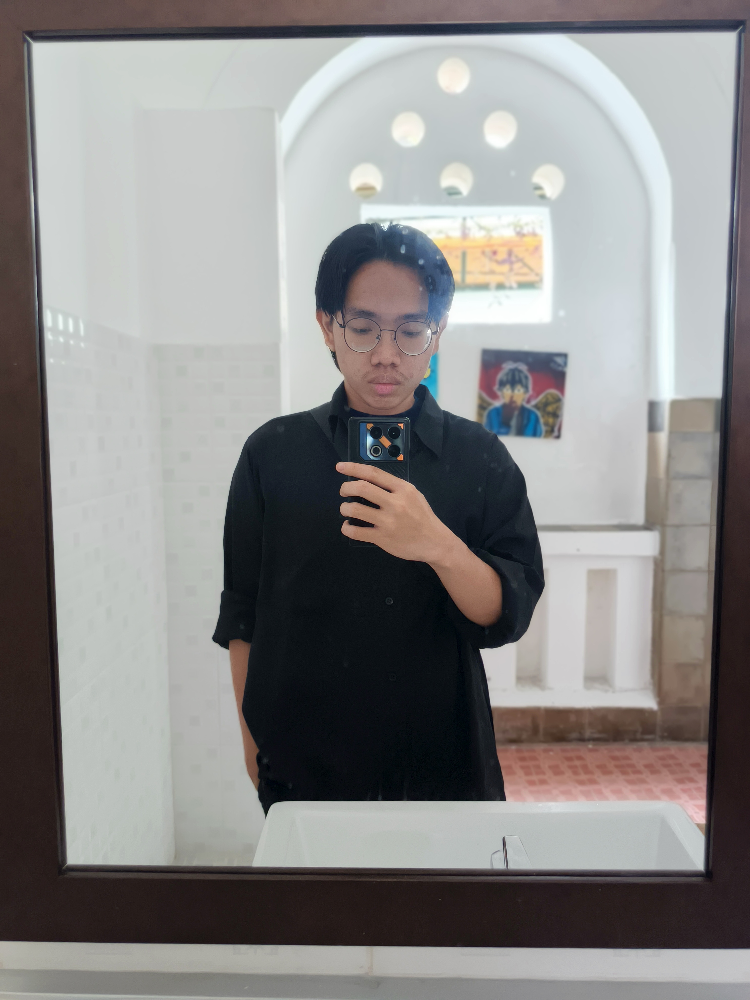

Nama Lengkap Anda
NIM: M0405251018
Informasi Pribadi
- Program Studi: Kecerdasan Buatan
- Angkatan: 62
- Kelompok: Voyager Amber
- Tempat, Tanggal Lahir: Jakarta, 18 April 2007
- Alamat Asal: Jl. Yudistira Blok C1, no.23, Kel. Tegal Alur, Kec. Kalideres, Jakarta Barat.
- Alamat Domisili: Jl. Perwira 19, Babakan Raya, Dramaga, Kabupaten Bogor, Jawa Barat
Hobi & Minat
Learn in new things, especially in technologies
Harapan di Program Studi Kecerdasan Buatan
Lulus tepat waktu dengan predikat cumlaude